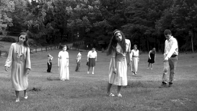

Horror in Cinema
Horror movies have been around since not long after the creation of cinema. The oldest horror film is "The house of the devil" from 1896. It includes a lot of things we recoginze are hallmarks of the horror genre, such as couldrons,skeletons and bats and well the devil. This film was lost for many years and was not found until 1988. Throughout history there has been numerous movies that have defined and pushed the genre of horror, here are some of the most famous.
.webp)
Halloween
John Carpenter's Halloween came out in 1978. Despite its success, it had quite a low budget; the now infamous Michael Meyeres mask was just a Captain Kirk mask spray painted. Horror fans love Halloween, and it's often credited for popularizing the "Slasher" film. Slasher is a specific sub-genre of Horror; it is characterized by a particular formula, generally including a psycho killer who runs around murdering people with their bladed sharp tools, all while terrorizing teenagers. Halloween is specifically influential because its formula has been duplicated numerous times over the decades; dozens of films and even TV shows like Stranger Things have credited Halloween for inspiration. Halloween became a huge blockbuster success, grossing 47 million USD at the box office. It has gone on to become a franchise with a total of 13 films, the latest one being "Halloween Ends" in 2022. Halloween redefined the horror genre into the popular mainstream. With its creative and indie feel, along with an original and defining plot, it has and will remain a horror cult classic.
Night of the Living Dead
Night of the Living Dead is an American horror film from 1968. It is widely considered the most influential zombie movie and is credited for establishing the pattern for modern Zombie movies. It used a very "average" setting as it was filmed in rural Pennsylvania. It gave the sense that these "otherworldly" evils could exist in our own backyards, and that closeness gave fans a deep, unsettling feeling, which was groundbreaking at the time. The film was also credited with breaking race barriers in cinema. One of the main characters, Ben, is played by Duane Jones, who is a black man. A main character being played by a black man is not why this is so groundbreaking its the way Ben is written. Ben is a calm, level-headed leader who makes decisions, while many of his white counterparts are hysterical. Early in the film, Ben is stuck in a cellar with a group of people. One by one, through one wayor another, they all die, and he ends up being the least one standing. At the end of the film, many of the zombies have left or are dead, and there is a group of local white men patrolling the area, looking for help. Ben pokes his head out of the seller. As soon as the group of men sees him, they shoot him because they assume he is a Zombie. The film ends with a shot of white men with hooks gathering Ben's body and throwing it into a fire. Initially, Ben was written as a white man, but the casting of Duane Jones ,gave the film a whole new meaning and lent a critique of racism in America. The Night of the Living Dead is highly influential and broke many barriers, changing the face of the horror genre forever.
Psycho
Psycho is one of the most famous horror movies in history. It defined and created the psychological horror sub-genre. Psycho is known for breaking barriers and filming in a very taboo manner. Often filming sexualized violence, and it dug deep into the psychoanalysis of the “villain” Norman Bates. Norman Bates as a character is just as famous as the movie itself. He was even named in the FBI’s list of the top 10 most iconic psychopaths in cinema. As the audience, we are drawn into Norman Bates, often seeing things from his perspective. Then, as Bates descends deeper into his schizophrenia and paranoia, we see him for who he is. One reason Psycho made such big waves was because Bates seems so normal from the outside. He is not a supernatural being or a masked man on a killing spree. To many people in his life, Norman is a regular guy; this makes the film feel very real. He is leaving the viewer with nowhere to hide.